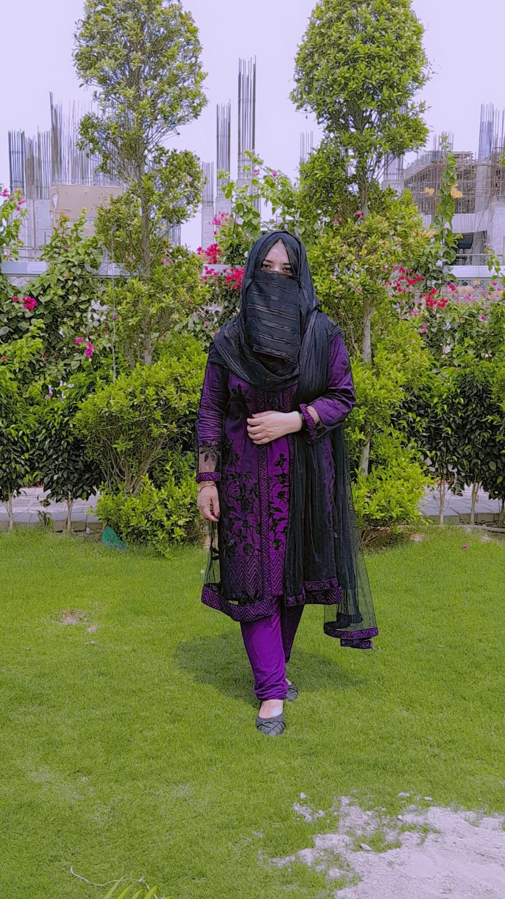
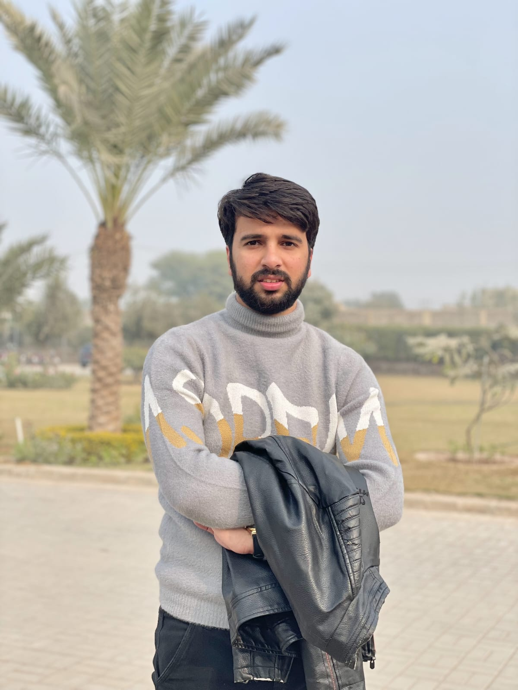

Dr Muhammad Hasaan Khadim PT
DPT (UHS-Lahore)
Bakhtawar Amin Medical College & Hospital Multan
Ex-Physiotherapist, Seyal Hospital Multan
Ex-Physiotherapist, SAPARC Multan
Personalized physiotherapy and rehabilitation care focused on reducing pain, restoring movement and improving everyday function.
Advance Physio Care Multan was founded to make quality physiotherapy more accessible, structured and patient-centered. Under the leadership of Dr Muhammad Hasaan Khadim PT, our team provides individualized assessment and rehabilitation across musculoskeletal, neuromuscular, paediatric and sports care.
Our approach is simple: understand the patient, identify the movement problem, build a clear treatment plan and guide each patient toward meaningful functional recovery.
DPT (UHS-Lahore)
Bakhtawar Amin Medical College & Hospital Multan
Ex-Physiotherapist, Seyal Hospital Multan
Ex-Physiotherapist, SAPARC Multan
Specialized physiotherapy professionals working together to provide focused rehabilitation.
DPT (UHS-Lahore)
Bakhtawar Amin Medical College & Hospital Multan
Ex-Physiotherapist, Seyal Hospital Multan
Ex-Physiotherapist, SAPARC Multan
DPT (UHS-Lahore)
Ex-House Officer, Ibn-e-Sina Hospital Multan
Ex-Internee, Multan Physio & Rehab Clinic

Gold Medalist
DPT (UHS-Lahore)
Ex-House Officer, Bakhtawar Amin Hospital Multan
DPT (Times University Multan), MS OMPT
Ex-Physiotherapist, Children Hospital Multan
Ex-Physiotherapist, SAPARC Multan
DPT (UHS-Lahore)
House Officer, Ibn-e-Sina Hospital Multan

DPT (UHS-Lahore)
House Officer, Bakhtawar Amin Hospital Multan
Neck, back, joint, muscle and movement-related problems.
Mobility, balance, strength and functional rehabilitation.
Child-focused rehabilitation and developmental support.
Recovery and return-to-activity programs for sports injuries.
Structured rehabilitation after surgery and orthopedic procedures.
Exercise-based care to improve independence and confidence.
Assessment and rehabilitation for common musculoskeletal, neurological, paediatric and sports-related conditions.
Ask our team about the Advance Physio Care Membership Card and available packages.
Book by phone or WhatsApp and speak with our team.
Street 7 • U Block • Near Baqir Abad Masjid • Passport Office • New Multan
Open Google Maps